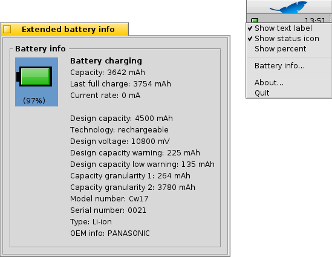

PowerStatus
PowerStatus
| Deskbar : | ||
| Localisation : | /boot/system/apps/PowerStatus | |
| Réglages : | ~/config/settings/PowerStatus settings |
Powerstatus affiche le niveau de charge des batteries, et n'est donc utile que pour un ordinateur portable.
Si ce n'est pas déjà fait, le démarrage de l'appliquette demandera si elle doit ouvrir une fenêtre normale ou si elle doit s'insérer dans le cartouche de la Deskbar.
En mode fenêtre, vous pouvez redimensionner l'icône en retaillant la fenêtre et glisser le Réplicant sur le bureau avec sa poignée.
Partout où il est installé, vous pouvez agir sur PowerStatus par l'intermédiaire d'un clic droit qui ouvrira un menu contextuel.
Note : Powerstatus nécessite un support de l'ACPI fonctionnel.
Le menu contextuel offre les options suivantes :
| Indique le niveau de batterie en pourcentage du temps restant. | ||
| Affiche l'icône de l'appliquette. | ||
| / | Bascule l'affichage entre le pourcentage de batterie restante ou le temps d'autonomie. ( doit être actif). | |
| Affiche la fenêtre des informations détaillés des batteries. | ||
| Affiche la fenêtre À propos (About). | ||
| Quitte l'appliquette PowerStatus. |
Quand est actif, le niveau des batteries est indiqué entre parenthèses pendant la charge.